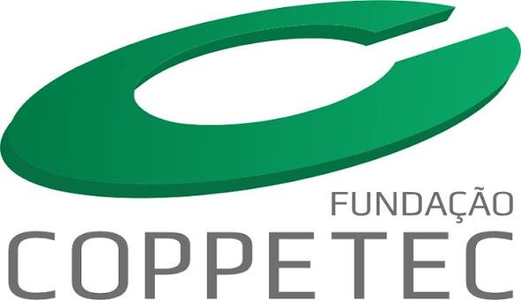
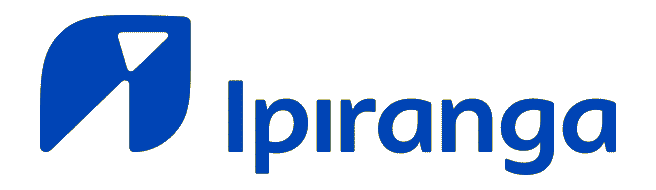
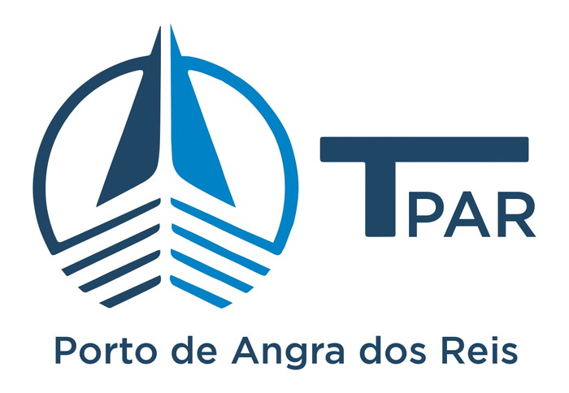
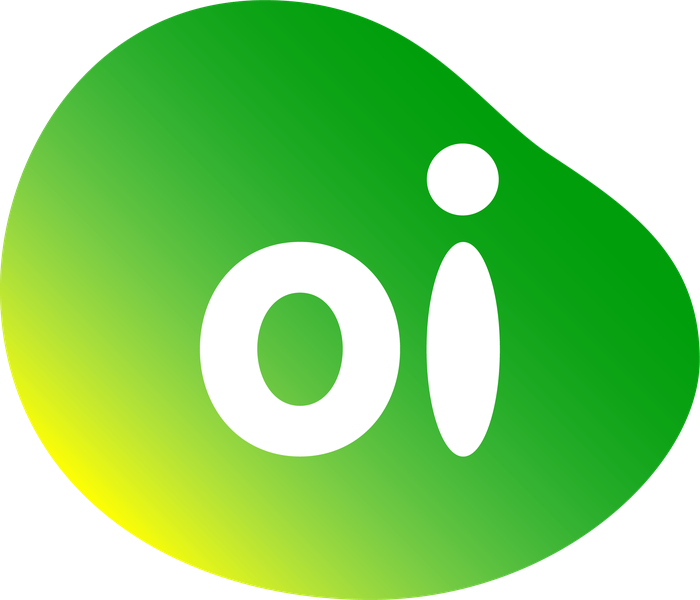

Obra documentada
Obra documentada
Otávio Kelly
Tijuca, Rio de Janeiro
Ver caso
ENGENHARIA CIVIL EM TODO O RIO DE JANEIRO
Construções, reformas, projetos estruturais e gerenciamento com acompanhamento técnico do início à entrega.
OBRAS E PROJETOS
Filtre por área de atuação. Os casos reais trazem localização e data; as demais imagens apresentam frentes de serviço.
Explorar portfólio completo6 itens exibidos.
Obra documentada
Tijuca, Rio de Janeiro
Ver caso Obra documentada
Obra documentada
Pechincha, Rio de Janeiro
Ver caso Obra documentada
Obra documentada
Caxias, Rio de Janeiro
Ver caso Referência visual
Referência visual
Planejamento, execução e acabamento
Ver atuação Referência visual
Referência visual
Adequações para operações de alta exigência
Ver atuação Referência visual
Referência visual
Soluções para ambientes mais seguros e acessíveis
Ver atuaçãoSERVIÇOS
Execução completa para ambientes residenciais, comerciais, corporativos e industriais.
02Soluções técnicas pensadas para reduzir imprevistos e orientar cada etapa da obra.
03Planejamento, orçamento e acompanhamento técnico com comunicação direta.
04Infraestrutura e adequações para operações que exigem precisão e continuidade.
NOSSO JEITO DE TRABALHAR
Cada etapa é conduzida com critérios claros, registro das decisões e contato direto com quem responde tecnicamente pelo trabalho.
EMPRESA
A Ferreira une experiência técnica, planejamento e acompanhamento próximo para transformar necessidades em obras bem executadas. Atendemos projetos de diferentes portes em todo o estado do Rio de Janeiro.
Conheça a Ferreira
RESPONSABILIDADE TÉCNICA
Da análise inicial ao acompanhamento da execução, Sandro Ferreira mantém presença técnica nas decisões que fazem a diferença em cada obra.
Conheça nossa históriaEXPERIÊNCIA REGISTRADA




Experiências realizadas diretamente e em parceria com empresas de engenharia.
VAMOS CONVERSAR